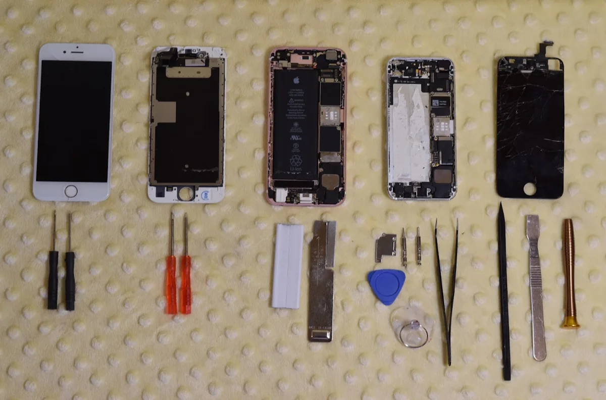
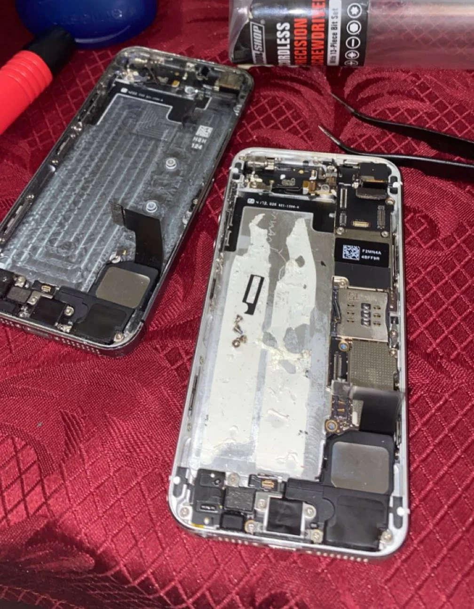

Personal project · Troubleshooting & repair
iPhone repairs.
Exploring how everyday electronics fit together by repairing older iPhone 5 and iPhone 6 devices and reusing components from a donor phone.
- My work
- Independent repair project
- Devices
- iPhone 5 & iPhone 6
- Focus
- Disassembly & component replacement
Why I started
I found older iPhone 5 and iPhone 6 devices at home and wanted to understand how they worked by repairing them. The project was a way to explore compact hardware, learn careful disassembly, and make use of components that might otherwise have been discarded.

iPhone 6: screen replacement
I opened the iPhone 6 to understand its internal layout, then ordered and installed a replacement screen. The repair required careful handling of small connections and attention to how the display fitted back into the enclosure.
iPhone 5: donor components
The iPhone 5 had a motherboard issue associated with a boot loop and a dead battery. To keep the repair cost down, I reused a motherboard and battery from another iPhone 5 that had extensive damage.


What the project involved
- Disassembling the devices and identifying how their parts connected.
- Installing a replacement display on the iPhone 6.
- Reusing compatible donor components for the iPhone 5.
- Handling and reassembling the small parts inside the phone enclosures.
What I learned
Working inside the phones made the packaging of the motherboard, battery, camera, display, and other components more tangible. It taught me patience with small hardware and encouraged me to keep exploring how everyday products are designed and repaired.